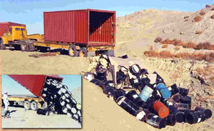

Consistently, Every Radioactive Waste Dump Built To Date Has Leaked
In the late 1960s, shallow unlined commercial landfills started being opened up to dump "low-level" radioactive waste.
The first commercial site for the disposal of LLRW was opened in
Beatty, Nevada, in 1962. Within the next 10 years, five more sites were opened in Washington, Illinois,
South Carolina, New York, and Kentucky. Private firms operated these sites on land leased from state
governments.
The U.S. has operated six low level commercial
radioactive waste landfills; four of these (at Maxey Flats, KY; West Valley,
NY; Sheffield, IL, and Beatty, NV) are now closed because of severe problems
with leakage and environmental contamination moving offsite. The remaining landfills at
Barnwell, S.C., Richland, WA, and Clive UT have also had problems with migrating
radioactivity.
In 1975, approximately ten years after it opened, the West Valley, New York "low-level" waste site was closed when
radioactive water burst through the trench caps into nearby streams, which, in turn, flow into Lake Erie, a source
of drinking water for hundreds of thousands of people.
Then, in 1977, the Maxey Flats, Kentucky site was closed when neighboring properties and streambeds were
contaminated with plutonium leaking from the site. Due to concerns about contamination, residents of Maxey Flats now
get there drinking water from sources 20 miles away, rather than from local wells.
A year later, the Sheffield, Illinois site was closed when tritium appeared in nearby test wells. Today, tritium is
migrating away from the site at a staggering rate of 2000-3000 feet per year.
By 1979, DOE adopted its current policy of disposing of its LLRW at its own sites to ensure the
availability of reliable disposal capacity and to limit its potential legal liability for claims by or against
commercial disposal facility operators. The DOE sites with operational waste disposal facilities are: the
Hanford Reservation; the Idaho National Engineering and Environmental Laboratory; the Los Alamos
National Laboratory; the Nevada Test Site; the Oak Ridge Reservation; and the Savannah River Site.
In recent years, two DOE mixed LLRW facilities also have been developed - one at Hanford and
the other at the Nevada Test Site. The DOE also operates disposal facilities that are authorized to receive
only waste generated by environmental cleanups at the site where the facility is located (site-dedicated dumps).
Barnwell, South Carolina
The Barnwell disposal facility in South Carolina is operated by Chem-Nuclear
and it is licensed to accept all types and classes of LLRW. The facility is
presently accepting waste from the entire nation with the exception of Rocky
Mountain and Northwest Compacts. In June 2000, South Carolina formally joined
New Jersey and Connecticut to
form the Atlantic Compact. Barnwell is the designated regional dump for the
Compact. South Carolina law allows disposal of non-compact waste at Barnwell
until year 2008; after that date the facility will remain open only to the
Atlantic Compact generators.
Starting in 1980, the State of South Carolina began restricting the amount of LLRW that could be
received at the Barnwell site with the goal of reducing the waste there to a maximum of 50 percent of its past
annual volume. As of October 1981, the Barnwell facility accepted LLRW at the equivalent rate of only
about 1,200,000 cubic feet of waste per year, whereas in 1979 the total volume disposed of at Barnwell was
about 2,300,000 cubic feet.
By 2001, Barnwell was again tightening access to the dump with plans of joining the Atlantic Compact, and
received about 120,000 cubic feet of waste, under it's limit of 180,000,
and Chem-Nuclear expects to receive 80,000 cubic feet of waste in fiscal year 2002.
In 1981, tritium was detected 21 meters below ground level in concentrations of 116,000 picoCuries per liter (pCi/L),
indicating downward movement of waterfrom the trenches.
Generally, normal background levels of tritium register less than 400 pCi/L.
Tritium was also detected considerably above background as far as 75 meters southwest from the site.
Well monitoring showed that tritium had moved 3,600 feet in the last 13 years. With tritium on the move, other radionuclides
followed and cobalt-60 migration was also particularly noted.
Up until 1982, chelating agents from Union Carbide (later Cintichem) were buried in the trenches
along with barrels of radioactive waste. Chelating agents are often found in fertilizers, and enhance the mobility of metals.
At the Maxey Flats site, similar conditions existed, and as the barrels corroded, strontium-90 mixed with the chelating agents
and migrated out.
The presence of faults at the site also enables migration. A fault runs through two or more trenches, and was filmed in 1976
by a USGS geologist. Several years later, the NRC inspected the site and found that a 75-foot long fault was also present
and stated that "other, similar undetected faults may be present."
Richland, Washington
Richland facility is located within
the DOE Hanford Reservation and operated by US Ecology. It accepts all types and classes of LLRW from the Northwest and Rocky
Mountain compacts (11 states). In year 2000, the facility accepted about 158,000 cubic feet of LLRW. The radioactivity of
the waste was about 79,000 curies (Ci).
In 1980, Washington voters passed an initiative that would have restricted
the site to wastes generated in the state of Washington and to only medical wastes generated in other states
as of July 1, 1981. In June 1981, a U.S. District Court ruled the initiative to be unconstitutional because of
the interstate commerce clause of the U.S. Constitution. The State of Washington attempted an unsuccessful
appeal of this decision (DOE, 1983).
Envirocare (Clive, Utah)
Envirocare is the only private corporation in the U.S. that is allowed to dump
nuclear waste on private land.
Envirocare facility is operated by the Envirocare of Utah and it is licensed to
accept up to class A waste and mixed waste for disposal. In year 2000,
Envirocare received about 3.0 million cubic feet of waste by volume. The radioactivity
of the waste was about 1800 Ci, mainly contaminated soil and debris from
decommissioning activities.
In July 2001, the State of
Utah Radiation Control Board made a final decision to approve Envirocare's
request for a license to accept and dispose of containerized Class A, B and C
waste. The application for Class A was submitted separately. For Class B and C,
the license is conditional upon approval from the Utah Legislature and Governor
(this is required by the state law). However, Envirocare has announced that
they are not going to seek legislative and gubernatorial approval for its Class
B and C waste at this time. The main reason is that the issue of Private
Storage Initiative for high-level radioactive waste in Utah has created a
public perception problem for Envirocare, and the company feels that if they
pursue this issue any further at this time, it would create more confusion and
representation of the facts concerning the Envirocare's proposal.
According to a January 4th, 2001 Deseret News/KSL-TV poll, 84% of Utahns oppose lawmakers approving a higher-level radioactive
waste permit for Envirocare. Envirocare would bury its nuclear waste in a shallow landfill, about 12-20
feet above the groundwater.
Scandal and statements that Envirocare had "bought" its license erupted in the late 1990s.
It was revealed that Envirocare's owner, Khosrow Semnani, made
payments of about $600,000 in cash, gold coins, and real estate to the former
Director of the Division of Radiation Control, Larry F. Anderson. Mr Anderson attempted to sue
Semnani for nonpayment for "services rendered" when he held office. Semnani was
fined $100,000, and Anderson was charged for mail fraud, tax fraud, and
extortion. Envirocare had also contributed over $90,000 to Utah legislators in the previous election cycle,
including $50,000 to Governor Leavitt and his campaign.
Waste Control Specialists in Texas has been spiteful and jealous of Envirocare, and has sued both
the federal government and
the company in what amounts to "we have a right to pollute too" lawsuits. See the section on Waste
Control Specialists LLC for more information.
The Dumps That Were Closed

Maxey Flats, Kentucky
Tritium is the most abundant radionuclide near the Maxey Flats, with levels
reaching 1830 times (5.5 billion pCi/L) the offsite maximum concentration limits (MCL).
The second most abundant isotope is strontium-90, with levels of 1000 times (300,000 pCi/L)
the offsite MCL's. Far from safe drinking water limits, tritium has been found in domestic wells,
in the drinking water for nearby Rock Lick Creek, and in milk samples from cows within 3.1 kilometers
in higher than background levels. Higher tritium levels has also been observed in leaves and sap
from maple trees in the area. Markedly higher levels follow a straight line along an underground
fault fracture.
In 1975, the EPA investigated plutonium migration at Maxey Flats.
While US Ecology, who operated the site, claimed that subsurface migration of plutonium was impossible, EPA found
plutonium three feet deep in core drilling samples.
It was also found in monitoring wells and drainage streams, as well as other subsurface soils.
EPA concluded that, "the burial site was expected to retain the buried plutonium for it's hazardous lifetime
but the plutonium has migrated from the site in less than ten years... If 100% retention of waste is the goal of shallow land disposal,
continued burial of plutonium in humid climates using present waste forms, containers and trench construction methods will not achieve the goal".
In 1978, the site closed, and under State care, the site was regraded to control runoff and covered with a 27-acre temporary
plastic cover, in addition to other preventative measures. While these actions helped, radionuclides were already loose and
continued to migrate. In 1991, the site was placed under federal Superfund care. The costs, estimated at over $75 million, were
contested to by US Ecology, who claimed that the decommissioning costs were the sole responsibility of the State of Kentucky. In
May 1992, a US District Court in Kentucky found the State fully libel for US Ecology's entire share of the cleanup costs related
to the mess which it had left ($40 million, including closure, maintenance, and repair fees). Thus, US Ecology was permitted to
completely walk away from measurable liability.
Sheffield, Illinois
The Nuclear Engineering Company (NECO), which later became US Ecology in 1981,
obtained a permit in October 1966 to dump radioactive waste at Sheffield. US Ecology
owns adjacent properties where it operates two chemical waste facilities. (for brevity, the name US Ecology shall be used consistently here)
Initially, it was thought that glacial deposits under the site had low permeability, however,
a pebbly sand of high permeability underlies two-thirds of the site. This area was thought to be discontinuous
due to findings of a otherwise lacking initial study, according to USGS findings in 1989, these areas "proved to be the
major conduit for groundwater flow and tritium transport from the site."
The water table was 15-45 feet below the surface, and although each trench was to be less than 10 feet from the water table,
at least one trench was dug deeper. In addition, a total of 315 examples of trench subsidences or "collapse cavities" occurred between
1978 and 1985. In 1980 alone, there were 79 subsidences, four of which exposed the buried wastes.
In 1976, when disposal space had been exhausted, US Ecology submitted an application for a 168-acre expansion, yet withdrew it on recommendations of Illinois'
Attorney General. Between 1975 and 1978, tritium migrated 75 feet east and kept accelerating. In February 1982, the Illinois Dept of Nuclear Safety
acknowledged that the tritium leak had spread outside of the property. Detection wells were drilled and showed that the leak had migrated 300-500 feet
east of the property.
In 1979, the site was officially closed, and US Ecology attempted to abandon the site,
and was slapped with a court injunction by the NRC to remain onsite. The State of
Illinois then initiated a $99 million lawsuit against the operator. The site had a "perpetual maintenance fund" of about $187,000
which was almost immediately exhausted. Finally, in 1988, US Ecology and the State reached a settlement. The company
agreed to pay $8 million to cover the costs of monitoring, to prevent water infiltration, to establish a contamination contingency fund, and
to re-establish a perpetual maintenance fund.